重點摘要
CT（電腦斷層）與MRI（磁振造影）都是產生斷面影像（cross sectional images）的進階影像工具，共同點是都需要數位運算處理、動物都需要鎮靜或全身麻醉配合。這章先建立兩者的核心差異：CT靠X光穿透組織後的衰減差異成像，本質上是「電腦運算過的X光」；MRI靠氫原子核在磁場中的行為差異成像，物理原理完全不同，也因此兩者對不同組織的顯影能力天差地遠（CT對骨骼最強、MRI對軟組織尤其腦部最強）。接著分別深入兩條主線：CT這邊要懂Hounsfield Unit（HU）如何把組織衰減程度轉成數字、窗寬窗位（WW/WL）如何決定同一張影像資料用什麼方式呈現、以及顯影劑與腎毒性風險；MRI這邊要懂氫質子如何被磁場排列與擾動而產生訊號、磁場帶來的絕對安全禁忌（金屬物體）、以及T1W／T2W／FLAIR／GE／脂肪抑制序列各自「在找什麼」的臨床邏輯。點下方任一分類可直接跳到該小節。
原理與適用構造差異
同一份資料多種呈現
氫質子、磁場禁忌
T1/T2/FLAIR/GE
- CT對骨骼與胸腔顯影最強（++++／+++），MRI對腦部與肌肉顯影最強（++++／+++）：兩者互補而非互相取代，選擇取決於感興趣的構造是什麼；MRI對肺部幾乎無法使用（肺泡氣體介面造成訊號嚴重流失）。
- CT只能直接取得橫切面（transverse），其他切面需靠電腦重組（reconstruction）；MRI可直接取得任何切面（矢狀、橫切、背側皆可直接掃描），這是兩者掃描邏輯的根本差異。
- Hounsfield Unit（HU）是以水為基準（0）、比較體素（voxel）平均衰減值後得到的數字：骨骼+1000、空氣-1000，數值越高代表衰減越強（影像越白）。
- 窗寬窗位（WW/WL）決定同一份CT原始資料要用什麼方式呈現：窗位（WL/WC）＝感興趣組織的HU值（畫面呈現的中心灰階）；窄窗寬（narrow WW）增加組織對比（適合本身HU差異小的軟組織）；寬窗寬（wide WW）適合涵蓋範圍廣、本身對比已足夠的組織（如肺、骨）——同一張CT掃描可以用骨窗、軟組織窗、肺窗分別呈現完全不同的畫面。
- 碘顯影劑經IV注射後主要評估三件事：正常組織與病灶的顯影強化程度差異、CNS血腦屏障是否受破壞、血管本身（CT angiography）；經腎絲球過濾排除，是CT urography的原理，也是顯影劑腎毒性風險的來源——檢查前應確認腎功能、維持適當水合狀態。
- CT常見偽像四類：動作偽像（motion）、射束硬化偽像（beam hardening）、部分容積效應（partial volume averaging），皆與掃描技術及病患配合度相關。
- MRI磁場對金屬物體是絕對安全禁忌：鐵磁性物體（如氧氣瓶、輪椅、監測設備）會被磁場當「飛彈」吸入磁場中心，曾造成嚴重傷亡事故；心臟節律器、金屬植入物、項圈、鑰匙、監測導線等一律不可進入磁場室。
- MRI脈衝序列的核心是「同一個病灶在不同序列上訊號強弱不同，藉此推論病灶性質」：T1W（解剖細節佳，Gd顯影評估用）、T2W（病灶通常較亮，敏感度高）、FLAIR消除純液體訊號（用於區分腦室/腦溝旁病灶與正常CSF）、GE對磁化率差異敏感（出血、鈣化、金屬呈訊號流失的「signal void」）、脂肪抑制序列（STIR／化學脂肪飽和）消除脂肪訊號（用於偵測骨髓病灶、脂肪瘤旁病灶）。
- 臨床判讀最終要問：這是有意義的病灶，還是偶然發現（incidental finding）？影像異常不等於臨床顯著，須結合病史、神經學／理學檢查定位、影像特徵綜合判斷，這是影像診斷學貫穿全程的臨床思維。
CT 與 MRI 的差異 CT vs. MRI — The Differences
CT與MRI都是斷面影像技術，但成像的物理原理完全不同，這決定了兩者的適用構造、掃描切面自由度與臨床角色分工。
共同特性
- 斷面影像（cross sectional images）：不同於傳統X光的重疊投影，CT/MRI呈現的是身體某一薄層的切面影像
- 數位化處理（digital processing）：影像資料經電腦運算產生，可後製調整呈現方式
- 動物須鎮靜／全身麻醉配合：掃描時間長，需完全靜止才能取得清晰影像
- 與X光、超音波互補：各有其擅長偵測的病灶類型與解剖部位
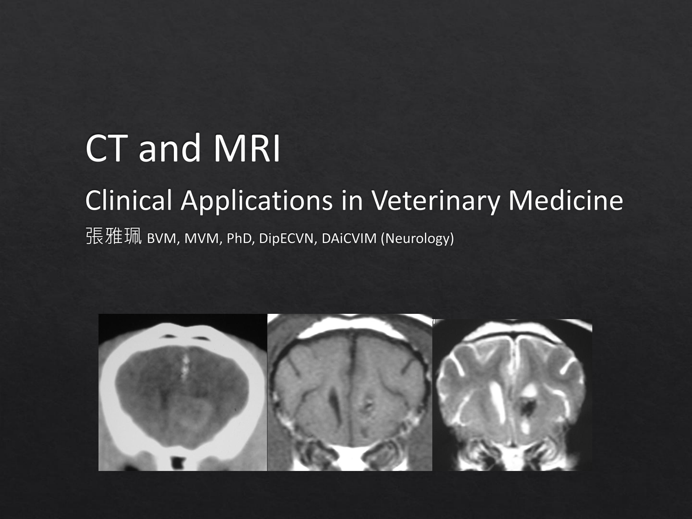
CT vs. MRI 綜合比較重要
| CT | MRI | |
|---|---|---|
| 判讀需求 | 熟悉正常解剖構造、Hounsfield unit（HU）、CT windowing（WW/WL） | 熟悉正常解剖構造、不同序列下的組織特性表現 |
| 骨骼顯影 | +++ | + |
| 軟組織顯影 | ++（病灶形態、顯影劑強化） | ++++ |
| 麻醉時間 | 短 | 較長 |
| 操作難易度 | 使用者友善（user friendly） | 需要特殊訓練（special training required） |
依構造別的 CT／MRI 顯影能力比較重要
| 構造 | CT | MRI |
|---|---|---|
| 鼻腔 Nasal cavity | ++ | ++ |
| 眼球後區 Retrobulbar region | ++ | ++ |
| 腦部 Brain | + | ++++ |
| 中耳 Middle ear | ++ | ++ |
| 顱底構造 Skull base structure | ++ | +++ |
| 肌肉 Muscle | + | +++ |
| 胸腔 Thorax | +++ | ─（幾乎無法使用） |
| 腹腔 Abdomen | +++ | +++（限高磁場 High-field MRI） |
| 脊髓／椎管 Spinal cord / vertebral canal | +（IVDD椎間盤疾病） | +++ |
| 骨骼／脊椎／頭骨 Bone / vertebra / skull | ++++ | + |
這張表是臨床選擇CT或MRI最直接的依據：懷疑骨骼、胸腔病灶（如骨折、腫瘤侵蝕骨質、肺部結節）優先選CT；懷疑腦部、脊髓實質、肌肉病灶（如腦炎、脊髓腫瘤、椎間盤壓迫脊髓）優先選MRI；胸腔幾乎不會用MRI（含氣肺組織訊號流失嚴重，CT才是胸腔的黃金標準）。
影像切面 Image Plane重要
CT與MRI皆可呈現三種基本切面：矢狀面（Sagittal）、橫切面（Transverse）、背側面（Dorsal）。
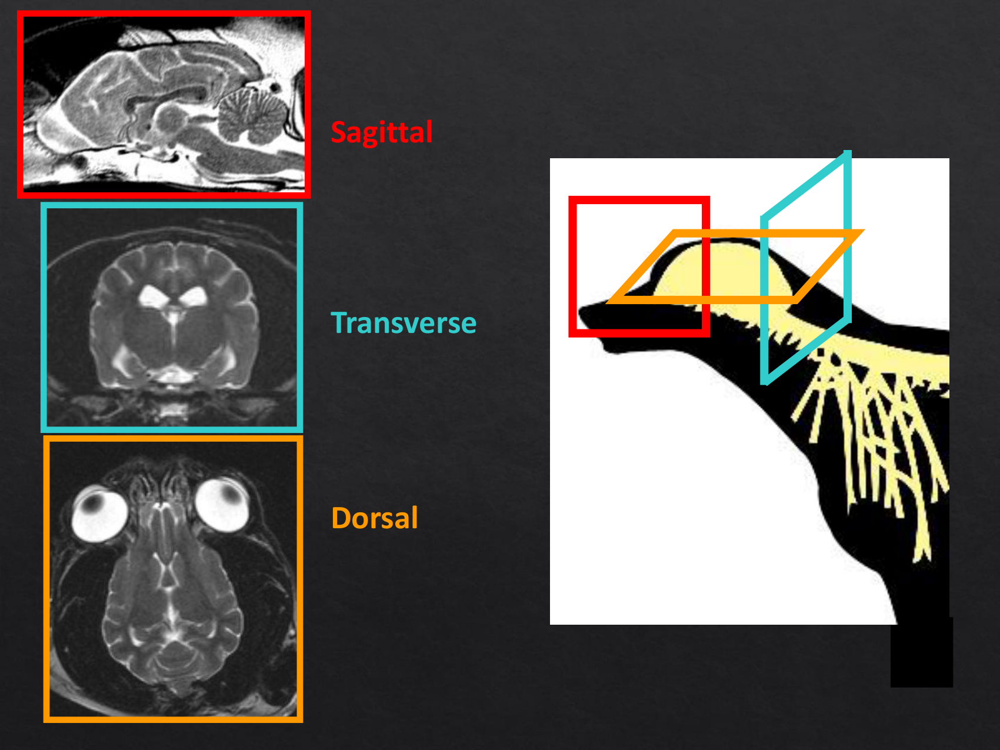
直接掃描僅能取得橫切面（transverse planes）；矢狀面／背側面須經電腦重組（reconstruction）取得
任何切面（any planes）皆可直接掃描取得，切面選擇更自由
CT 成像原理與機型 CT: Computed (Axial) Tomography
CT的全名「電腦（軸向）斷層攝影」點出了它的本質：X光管與偵測器繞著病患旋轉取得大量投影資料，再交由電腦運算重建成斷面影像。
CT 掃描幾何架構重要
X光管（X-ray source）與對側的偵測器陣列（Detectors）一同繞著病患（Patient）旋轉，X光穿透病患後被偵測器接收，訊號傳送至電腦（Computer）運算重建影像。
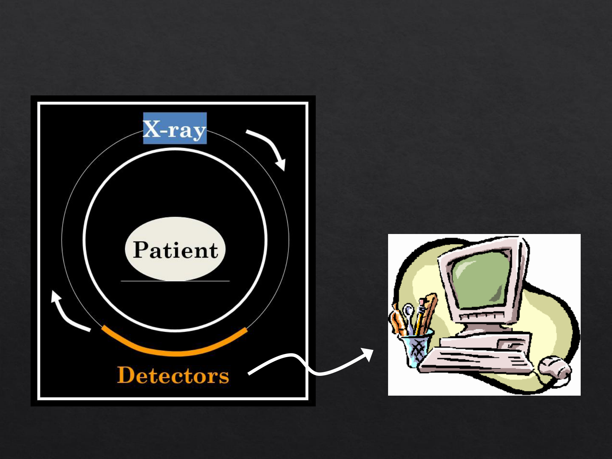
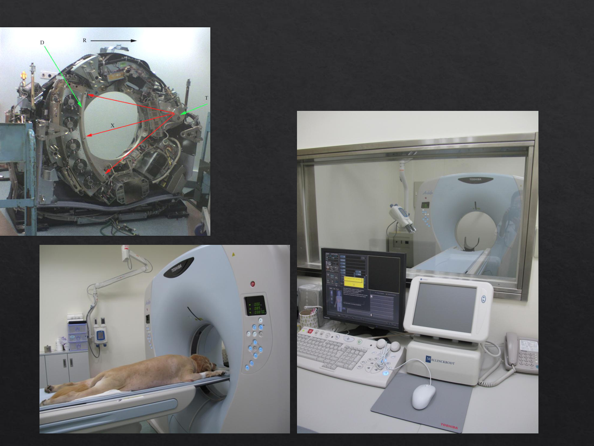
CT 機型種類重要
每次旋轉僅取得一層切面影像，掃描速度較慢
檢查床持續移動同時X光管連續旋轉，掃描軌跡呈螺旋狀，大幅縮短掃描時間
偵測器排列成多列（multi-row），單次旋轉可同時取得多層切面，是現代CT主流
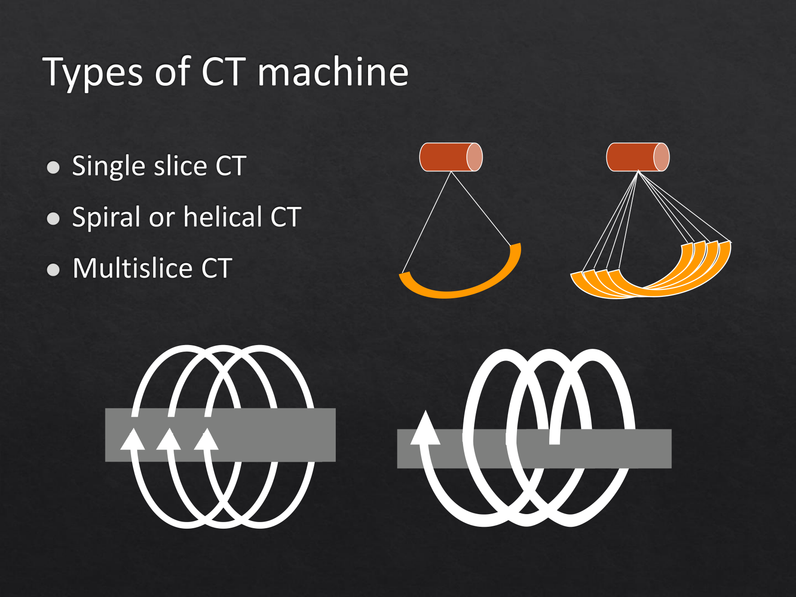
Hounsfield Unit 與窗寬窗位 Hounsfield Unit & CT Windowing
理解HU如何把「衰減程度」轉成數字，再理解窗寬窗位如何把同一份數字資料轉成人眼可判讀的灰階影像，是讀懂任何一張CT片的基礎。
矩陣、像素與體素 Matrix, Pixel & Voxel
CT影像由矩陣（matrix size = N1 × N2）組成，矩陣中每一格稱為像素（pixel）；像素乘上切片厚度（slice thickness）即為體素（voxel）——體素內組織的平均X光衰減值，經運算後即為該像素顯示的Hounsfield unit（HU，CT number）。
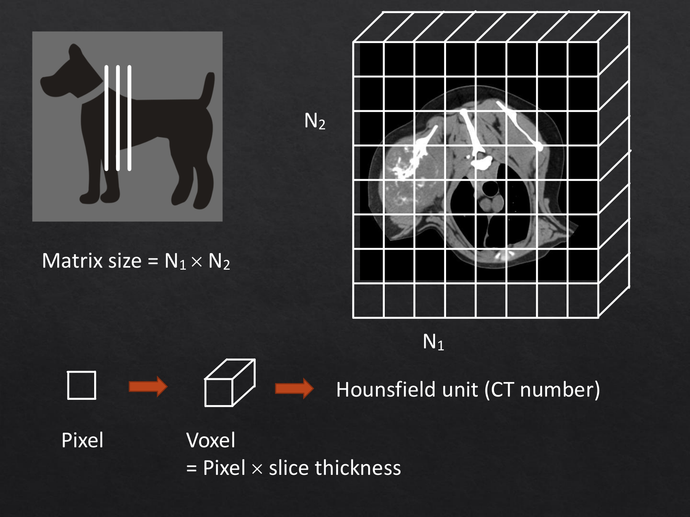
Hounsfield Unit（HU，CT number）重要
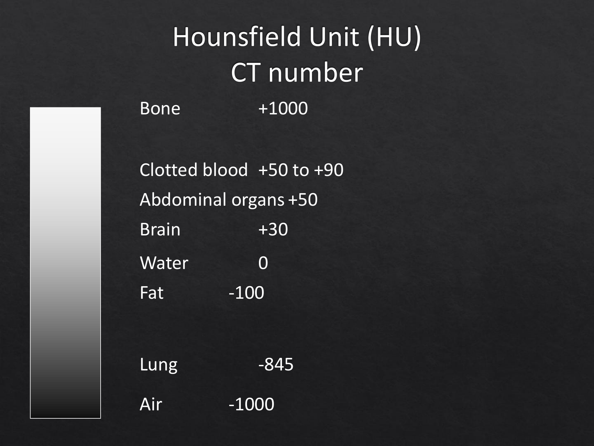
CT Windowing 窗寬窗位重要
CT原始資料的HU範圍（-1000到+1000甚至更廣）遠超過人眼能分辨的灰階數量，因此需要透過窗寬窗位選取一段HU範圍，把這段範圍內的HU值映射到完整的黑白灰階，才能呈現該範圍組織的細節對比。
CT理論上可以呈現多達約2000種不同的灰階（對應完整HU範圍），但人眼實際上根本分辨不出這麼多層次的灰階差異——即使資料裡兩個構造的HU值確實不同，若原封不動平均映射到全部2000級灰階上，人眼看起來仍是「差不多的灰」，無法有效區分。Windowing的本質，就是把人眼看不出來的細微HU差異，透過只選取一小段窗寬、拉開映射到黑到白的完整對比範圍，變成人眼「看得出來」的視覺差異。例如肝臟與胃壁的HU值可能彼此非常接近，直接看原始資料幾乎無法分辨兩者邊界；但只要調整窗寬窗位，把這兩者所在的HU範圍窄窗放大顯示，視覺上就能把兩者的邊界拉開、清楚區分——這正是窗寬窗位存在的核心目的：不是改變資料本身，而是改變人眼能感知到的對比呈現方式。
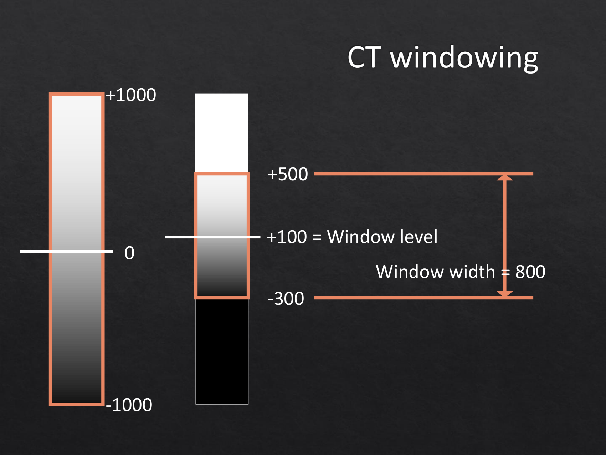
感興趣組織的HU值，決定灰階範圍的中心點落在哪裡
窄窗寬：增加組織對比（適合HU值彼此接近的軟組織）
寬窗寬：組織本身對比已足夠、需涵蓋廣泛範圍時使用（如骨、肺）
常見窗設定與實例對照
| 窗別 | WL | WW | 顯示範圍 |
|---|---|---|---|
| 骨窗 Bone window | 300 | 2000 | -700 至 1300 |
| 軟組織窗 Soft tissue window | 50 | 350 | -125 至 225 |
| 肺窗 Lung window | -600 | 1600 | -1400 至 200 |
| 鼻竇窗 Sinus window | 400 | 4000 | -1600 至 2400 |
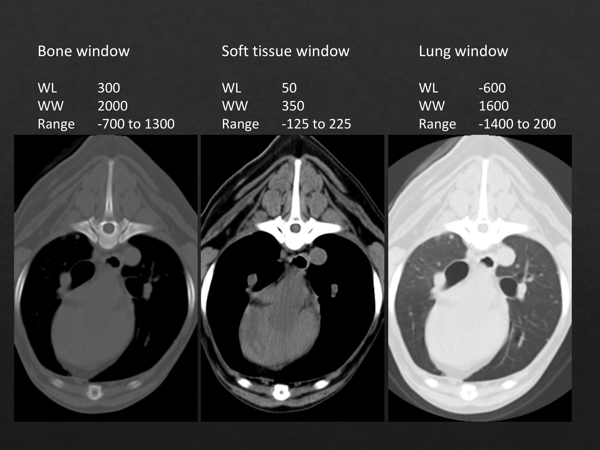
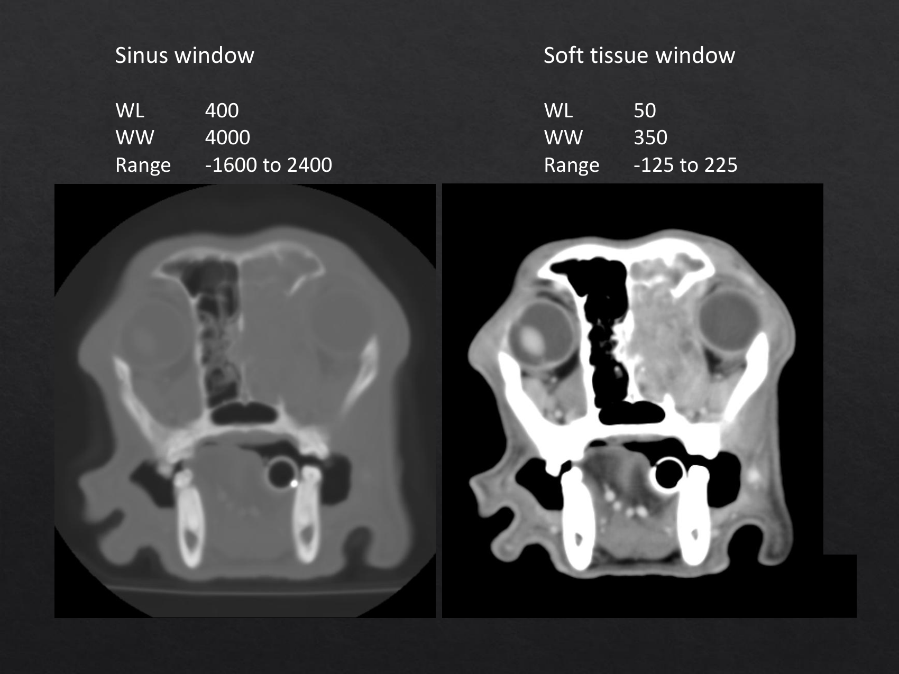
影像重組 Image Reconstruction
CT掃描本質上只直接取得一系列橫切面影像，但透過電腦運算可以把這些橫切面資料「切」成任何角度，甚至組成立體模型，這是CT相對於傳統X光最強大的優勢之一。
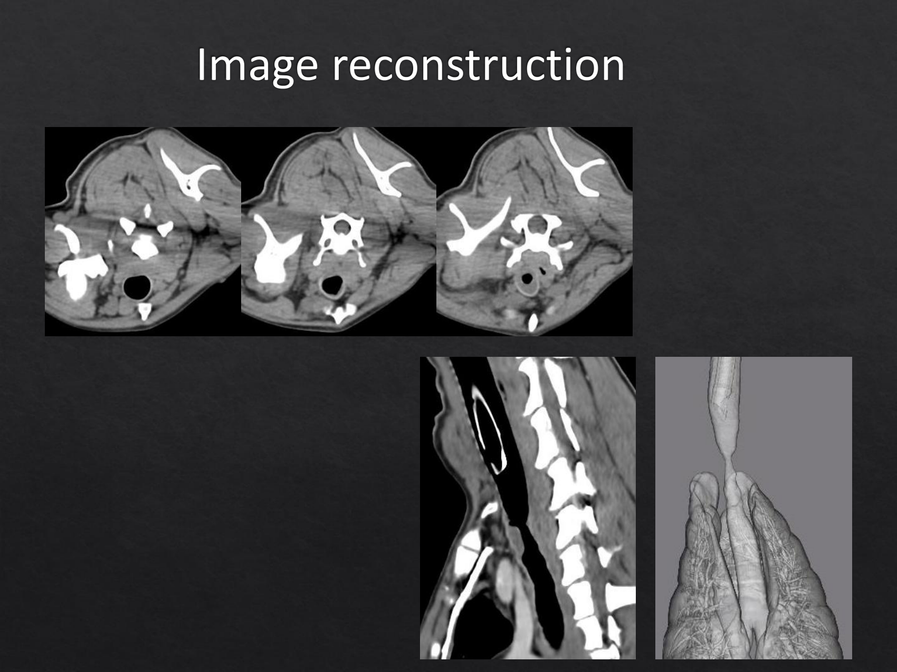
重組能力是多切CT薄層掃描的直接效益：切片越薄、矩陣解析度越高，重組出的矢狀面／背側面／3D影像就越平滑清晰，這也是現代多切螺旋CT逐漸取代單切CT的重要原因之一。
顯影劑與腎毒性 Contrast Media & Nephrotoxicity
碘顯影劑讓CT從「只能看解剖構造」升級成「可以評估血流灌注與屏障完整性」，但這個能力伴隨著過敏反應與腎毒性兩個必須事先評估的風險。
碘顯影劑 Iodinated Contrast Media重要
靜脈注射（Intravenous）後，經由觀察顯影強化（enhancement）程度評估：
- 正常組織 vs. 病灶：兩者血流灌注與血管通透性不同，顯影強化程度也不同，是鑑別病灶的重要依據
- 中樞神經系統：正常情況下血腦屏障（blood-brain-barrier）阻擋顯影劑進入腦實質；血腦屏障受破壞的病灶（如腫瘤、發炎）會出現異常顯影強化
- 血管本身：顯影劑注射時機抓在血管內濃度最高的時間點掃描，即為CT血管攝影（CT angiography）
臨床上最常見的顯影劑給藥途徑是IV（靜脈注射），注射後比較顯影前後影像，本質上是在找兩種方向相反的異常：
正常情況下該組織有屏障阻擋顯影劑、或血流量極低，不應該明顯顯影；若異常顯影，通常代表屏障被破壞或出現病理性血管增生。
正常情況下該組織血流灌注豐富、應該明顯顯影；若某區域異常不顯影，通常代表該處血流灌注中斷或組織已壞死。
| 方向 | 正常表現 | 異常時的意義 | 器官／構造實例 |
|---|---|---|---|
| ① 不該顯影卻顯影 | 腦實質：血腦屏障完整，顯影劑無法進入腦組織 | 血腦屏障受破壞（腫瘤、發炎、感染） | 腦部腫瘤、腦炎、腦膿瘍出現異常顯影強化區 |
| 椎間盤髓核：正常無血管供應，不顯影 | 病灶侵犯或發炎反應 | 椎間盤炎（discospondylitis）、腫瘤侵犯椎間盤呈異常顯影 | |
| 骨皮質／骨髓腔：血流供應相對低，顯影不明顯 | 骨髓腔或骨膜血管增生 | 骨髓炎（osteomyelitis）、骨腫瘤呈局部異常顯影 | |
| ② 該顯影卻不顯影 | 脾臟：血流極豐富，正常應強烈顯影 | 局部血流灌注中斷、組織壞死 | 脾梗塞、脾臟腫瘤壞死區呈局部不顯影 |
| 腎臟皮質：血流豐富，正常應強烈顯影 | 血管阻塞或缺血壞死 | 腎梗塞、腎皮質壞死呈楔形不顯影區 | |
| 腫瘤中心：邊緣血流供應通常較內部豐富 | 腫瘤中心因生長過快而壞死 | 腫瘤呈「環狀顯影強化（ring enhancement）」——邊緣顯影、中心壞死不顯影，同時展現①②兩種方向 |
經腎絲球過濾排除（excretion by glomerular filtration）——這個排除路徑同時是CT urography（CT泌尿道攝影）的成像原理，也是顯影劑腎毒性風險的來源。
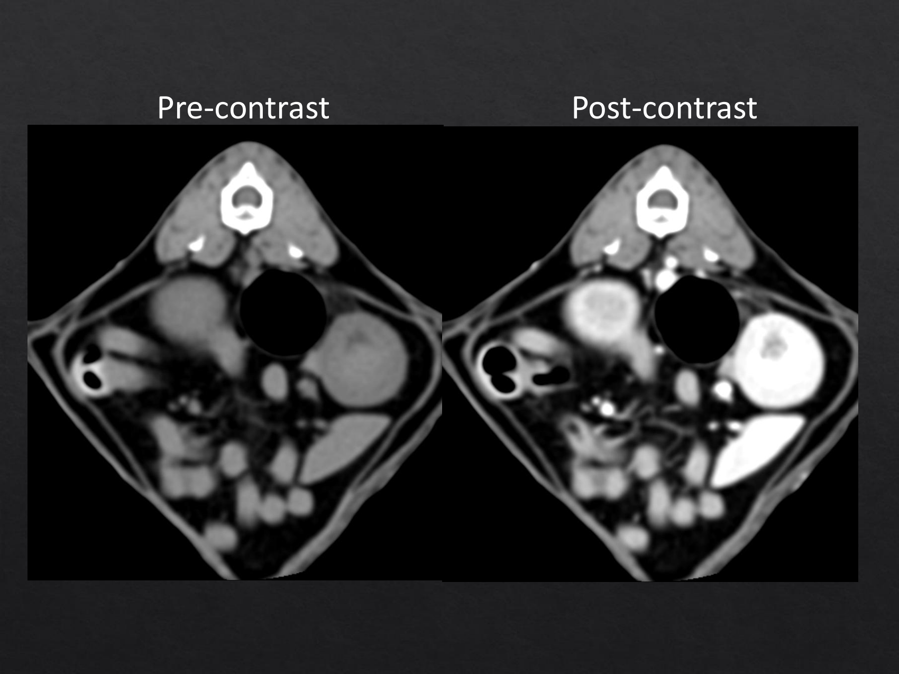
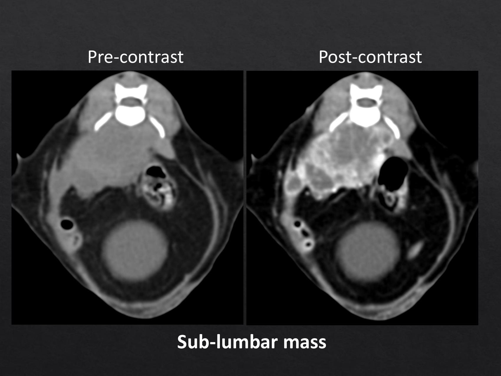
顯影劑不良反應嚴重度分級重要
| 嚴重度 | 臨床表現 |
|---|---|
| 輕度 Mild | 皮膚紅疹、搔癢、鼻分泌物、噁心、嘔吐 |
| 中度 Moderate | 輕度症狀持續不退、顏面或喉頭水腫、支氣管痙攣、呼吸困難、心搏過速或過緩 |
| 重度 Severe | 致命性心律不整、低血壓、喉頭水腫、明顯支氣管痙攣、肺水腫、癲癇、昏厥、死亡 |
顯影劑腎毒性 Contrast-Induced Nephrotoxicity重要
風險因子（人醫資料）：已存在的腎臟疾病、糖尿病、多發性骨髓瘤、蛋白尿、脫水、高血壓。
- 先評估是否真的需要顯影劑檢查
- 使用低滲透壓顯影劑（low-osmolality contrast media）
- 有前次不良反應病史的病患，考慮全身麻醉下進行、並給予術前用藥
- 檢查前確認腎功能
- 使用最低有效劑量
- 維持適當水合狀態（hydration）
- 檢查前停用其他腎毒性藥物
CT 偽像 CT Artifacts
判讀CT影像前，須先能辨識這些技術性偽像，避免將其誤判為真正的病灶。
病患配合度不足或未充分麻醉，掃描過程中移動造成影像模糊或重複邊緣
X光束通過高密度構造（如骨骼、金屬）後低能量光子被優先吸收，造成條紋狀偽像
單一體素內同時包含多種不同衰減程度的組織時，該像素呈現的HU值是內部組織的平均值，可能掩蓋小病灶或使邊界模糊
環狀偽像、金屬偽像等，視掃描機型與病患情況而定
MRI 物理基礎 Magnetic Resonance Imaging: Principles
MRI的成像基礎與X光完全不同，是利用氫原子核在強磁場中的物理行為差異來產生訊號，理解這個起點才能理解後續各種脈衝序列的設計邏輯。
氫質子 Hydrogen Proton重要
人體（與動物體）內含量最豐富的原子核是氫質子：帶正電荷，且不斷自旋（spinning about its own axis）——帶電荷的物體自旋會產生磁場，這是MRI能夠利用氫質子成像的物理基礎。在沒有外加磁場時，體內大量氫質子的自旋方向隨機排列，彼此磁場方向互相抵消，淨磁化量 M0 = 0；進入MRI的強磁場後，氫質子才會傾向沿磁場方向排列，產生可偵測的淨磁化訊號。
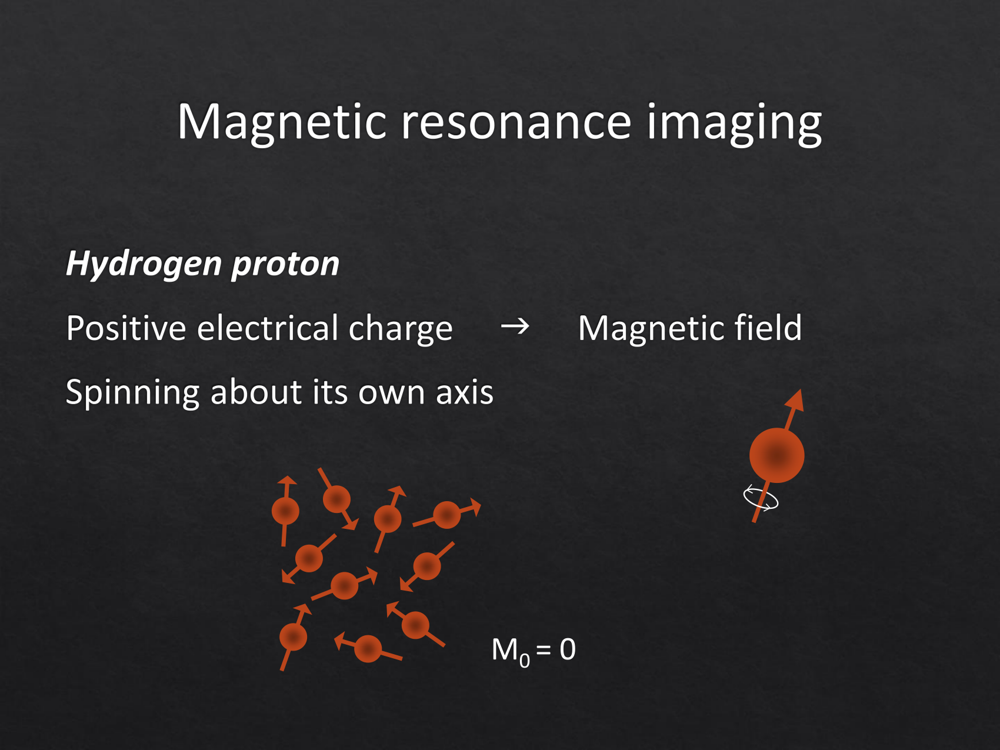
臨床磁場強度分級
| 分級 | 磁場強度 | 備註 |
|---|---|---|
| 多數臨床磁場 | 0.5 – 3 tesla (T) | — |
| 低磁場 Low field MR | 0.2 – 0.5 tesla (T) | — |
| 高磁場 High field MR | 1 – 3 tesla (T) | 多數人醫醫院使用 |
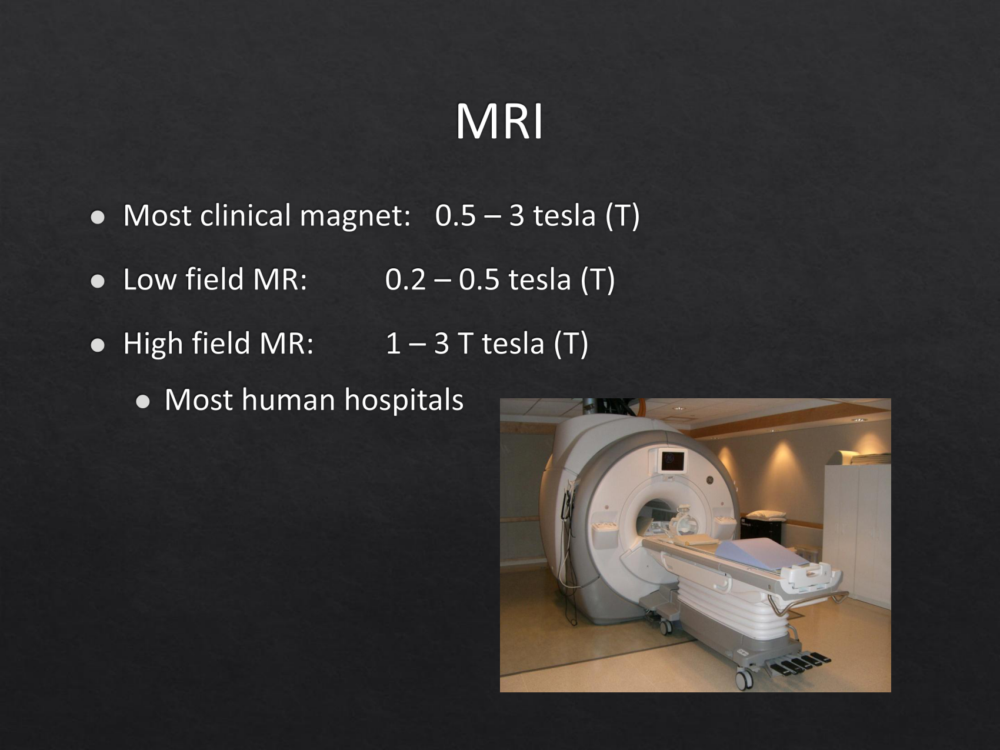
MRI 安全性 MRI Safety
MRI的強磁場對金屬物體是絕對且不可妥協的安全禁忌，這一節的內容在臨床實務上比任何診斷知識都更優先——進磁場室前的安全檢查一旦疏漏，後果可能是致命的。
鐵磁性金屬物體一旦進入強磁場範圍，會被磁場以極高的加速度吸入磁場中心，形成所謂的「飛彈效應（missile effect）」，對病患、工作人員與設備都可能造成嚴重傷害，是MRI最重要的安全議題（safety issue）。
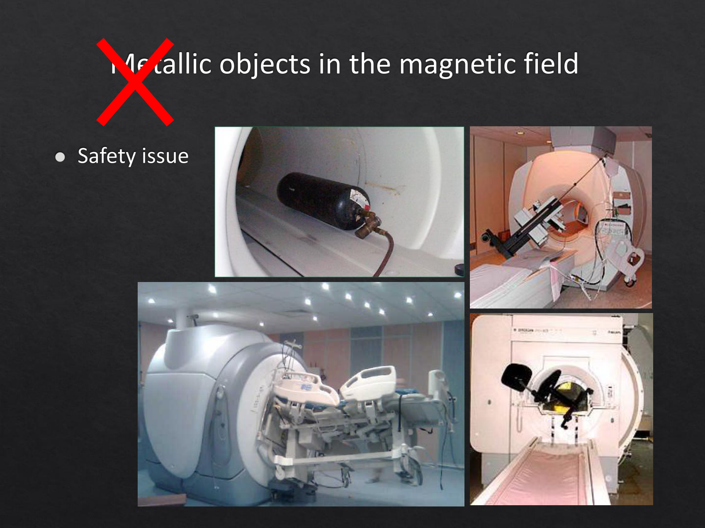
禁止攜入磁場室的物品清單重要
- 金屬植入物（Metal implants）
- 具磁性的醫療裝置：心臟節律器（cardiac pacemaker）、外科夾（clips）、骨科植入物等
- 項圈、牽繩（collar, leash）
- 錢包、信用卡、手錶、鑰匙（wallet, credit card, watch, keys）
- 監測設備、針具、聽診器、推車（monitoring equipments, needles, stethoscope, trolley）
金屬造成的影像扭曲 Image Distortion
即使金屬物體本身不會被吸入（如深部骨科植入物），仍會在局部磁場產生嚴重不均勻，造成該區域影像嚴重扭曲變形（distortion），使該範圍的解剖構造完全無法判讀。
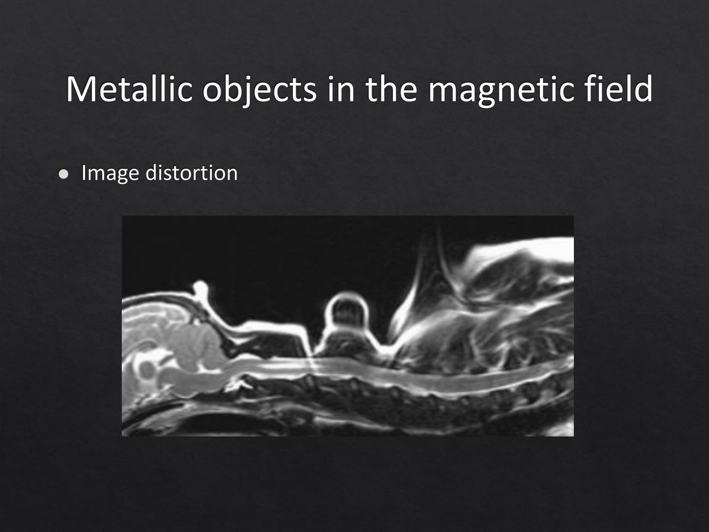
常見脈衝序列 Common Pulse Sequences in MRI
每一種脈衝序列都是針對特定臨床問題設計出來的「不同拍照方式」，讀這節的訣竅是問「這個序列想凸顯什麼、想消除什麼」，而不是死記訊號強弱。
六大類常見序列重要
解剖細節佳，是顯影劑（Gd）前後對照的基礎序列
對病灶（水腫、發炎、多數病灶）訊號變化最敏感，通常呈高訊號（亮）
注射Gd顯影劑後的T1W影像，凸顯血腦屏障破壞或血流豐富的病灶
消除純液體（CSF）訊號，用於偵測腦室/腦溝旁病灶
對磁化率差異敏感，偵測出血、鈣化、金屬異物
STIR或化學脂肪飽和，消除脂肪訊號，偵測骨髓或脂肪旁病灶
T1W vs. T2W 基礎對照重要
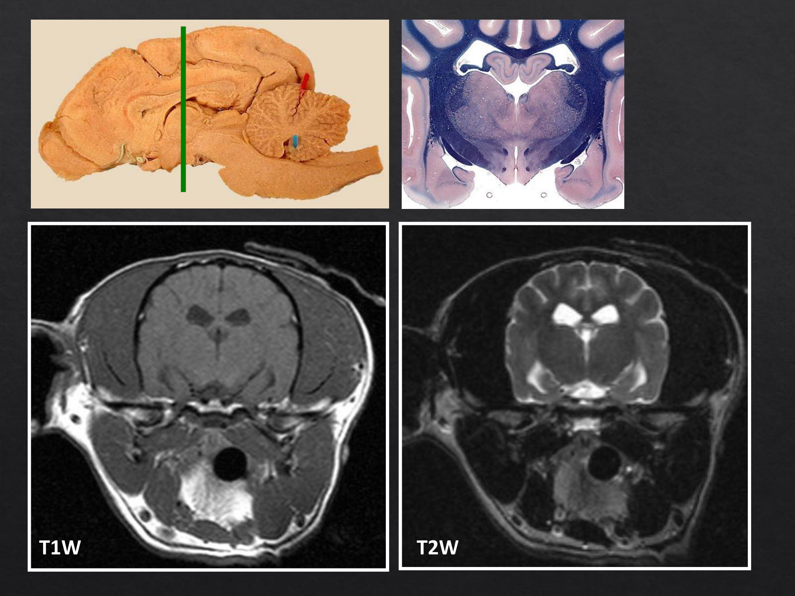
T1W Post-Gadolinium：顯影強化評估
注射Gadolinium（Gd／Gad）顯影劑後，比較顯影前後的T1W影像，可評估病灶的顯影強化模式——這是Gd（釓）的順磁性（paramagnetic property）所致，可用於評估：血管本身（正常或增生血管）、正常組織、病灶、血腦屏障是否受破壞。顯影後常搭配T1-weighted或FLAIR序列掃描；Gd顯影劑造成的過敏反應機率低於非離子型碘顯影劑。
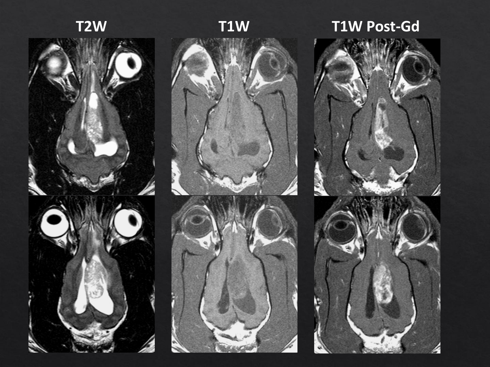
FLAIR（Fluid-Attenuated Inversion Recovery）重要
機轉：消除純液體（如CSF）的訊號。臨床用途：偵測緊鄰含液體空間的病灶——腦室（ventricles）、腦溝（sulci）、囊腫（cyst）旁的病灶，若不使用FLAIR，這些病灶的高訊號可能被相鄰同樣呈高訊號的CSF掩蓋（輪廓消失效應的MRI版本）。
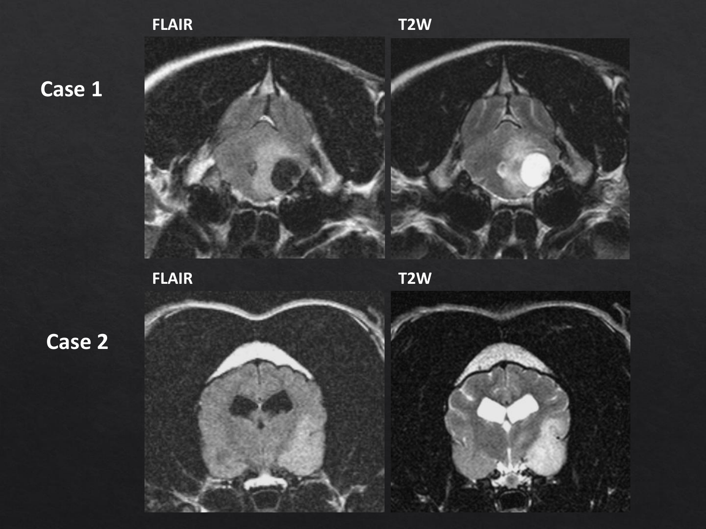
GE（Gradient Echo）／SWI（Susceptibility Weighted Imaging）重要
機轉：對不同組織間磁化率（magnetic susceptibility）差異特別敏感，尤其是順磁性或反磁性物質：變性血紅素（methemoglobin）、鐵（如ferritin鐵蛋白）、銅、黑色素、鈣化、外來金屬異物。這些物質在GE序列上會造成磁化率偽像（magnetic susceptibility artifacts），呈現訊號流失（signal void）——影像上出現一塊明顯比周圍暗、且範圍常被放大（blooming effect）的區域，是偵測出血、鈣化、金屬異物最敏感的序列。
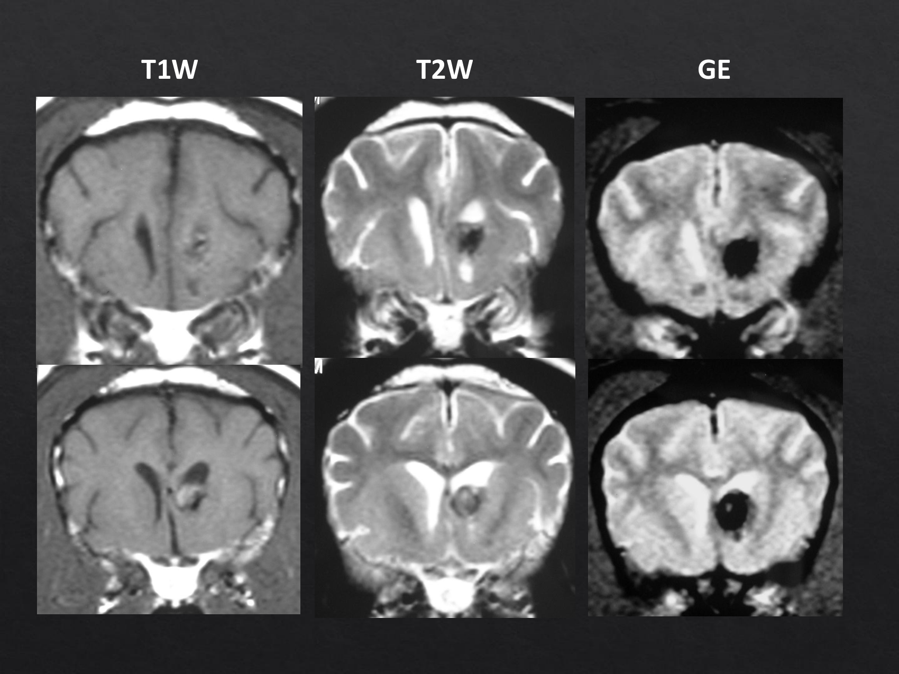
脂肪訊號抑制技術 Fat-Signal Suppression重要
兩種常見技術：STIR（short T1 inversion recovery）與化學脂肪飽和（chemical fat-saturation），機轉皆為消除脂肪的訊號。臨床用途：偵測緊鄰脂肪組織的病灶——骨髓病灶（bone marrow lesion）（骨髓含大量脂肪，病灶若不抑制脂肪訊號容易被掩蓋）、脂肪瘤（lipoma）旁的病灶、臂神經叢區域（brachial plexus region）（周圍富含脂肪組織，抑制後神經構造與病灶更易辨識）、淋巴瘤（lymphoma）等富含水分的腫瘤（腫瘤細胞緊密、含水量高，抑制掉周遭脂肪的高訊號後，腫瘤與背景的對比大幅提升）。原理與FLAIR相似，都是針對「某一種特定組織的訊號」做選擇性消除，藉此凸顯被這種組織掩蓋的病灶。
STIR 的機轉：為什麼是「把脂肪歸零」，不是「把脂肪變暗」
STIR 屬於反轉回復序列（inversion recovery），操作上比一般序列多一個步驟：
先把 Mz 完全翻轉成 −Mz
回復速度＝各組織自己的 T1
TI＝反轉時間，可自由設定
關鍵在於：Mz 從 −Mz 回復到 +Mz 的路上，一定會經過 0——這一刻該組織完全沒有縱向磁化量可以被激發，讀出來就是沒有訊號（黑），稱為零點（null point），零點出現的時間點只跟這個組織自己的 T1 有關（T1 越短，回復越快，零點出現得越早）。脂肪的 T1 特別短，所以只要把 TI 設定在脂肪的零點，讀值那一刻脂肪剛好通過 0，訊號被完全抹除；而其他組織（T1 較長，此時還沒回復到自己的零點）仍帶有磁化量、仍會產生訊號。這就是「選擇性消除某一種組織訊號」的物理基礎，不是靠後製把脂肪訊號調暗，而是造影當下脂肪真的沒有訊號可讀。
這正是為什麼 STIR 對淋巴瘤、水腫、發炎這類「含水量高、T1 相對較長」的病灶特別敏感——這些組織不會被歸零，而它們周遭常見的脂肪（皮下脂肪、體腔脂肪、骨髓脂肪）會被歸零，兩者訊號差距被最大化，病灶邊界因此格外清楚。同一份講義提到的化學脂肪飽和（chemical fat-saturation）是用不同的物理原理（利用脂肪與水的共振頻率差，先用選擇性脈衝把脂肪的橫向磁化打散）達到類似「消除脂肪訊號」的效果，兩者殊途同歸，但 STIR 對磁場不均勻的耐受度較好，臨床更常用於四肢／脊椎等磁場均勻度較差的部位。
臨床操作與判讀要點 Practical Considerations
掃描品質很大程度取決於擺位是否正確；判讀時則永遠要回到「這個發現對這隻動物的臨床表現有意義嗎」這個問題。
MRI 擺位重點重要
- 選擇適當的線圈（appropriate coil）：不同大小、不同部位的線圈訊噪比表現不同
- 感興趣部位應盡量靠近線圈、置於線圈中心（close to the coil、center of the coil）：訊號強度隨距線圈的距離快速下降
- 維持病患姿勢端正筆直（keep the position straight）：歪斜會造成左右不對稱的偽影像比較困難
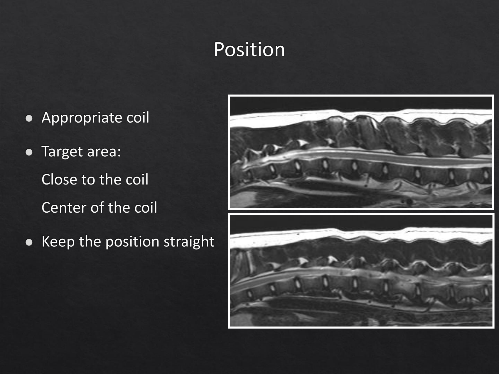
有意義病灶 vs. 偶然發現重要
並非每一個影像上看到的異常訊號都代表臨床顯著病灶——偶然發現（incidental findings）在健康或無關臨床症狀的動物身上並不少見（如輕微椎間盤突出但無神經學症狀）。判讀時必須結合病史、神經學／理學檢查的定位結果，以及影像特徵綜合判斷，才能決定該發現是否足以解釋病患目前的臨床表現、是否需要進一步處置。
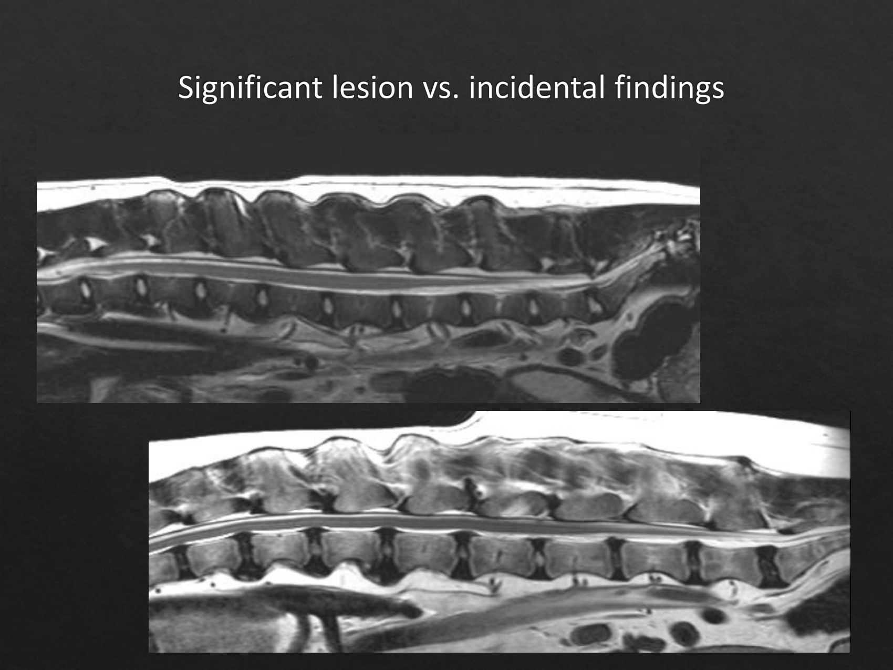
學習重點整理
考試最愛出「依構造選CT或MRI」「HU數值配對」「脈衝序列辨識」三種題型，複習前先快速掃過本節。
練習題 Practice Quiz
涵蓋CT/MRI構造選擇、HU與窗寬窗位、MRI安全性、脈衝序列辨識各章節重點，最後一題為臨床情境整合題，先自己作答再點「顯示答案」核對。
依講義的構造別顯影能力比較表，MRI對腦部的顯影能力為「++++」（最強等級），CT對腦部僅「+」（顯影能力有限）；MRI對軟組織尤其是腦部的對比解析度遠優於CT，因此懷疑腦部實質病灶時應優先選擇MRI。
CT掃描時X光管與偵測器只繞著病患的橫軸旋轉，因此只能直接取得橫切面（transverse planes）影像；矢狀面與背側面影像都必須透過電腦將一系列橫切面資料重新運算組合（reconstruction）才能取得。相對地，MRI可以直接掃描任何切面，不需要依賴重組。
CT windowing的核心概念就是同一份原始HU資料可以透過切換窗寬窗位設定，呈現出完全不同的畫面重點：軟組織窗（窄窗寬、WL約50）能放大軟組織間本身就不大的HU差異、提供最佳軟組織對比；骨窗（寬窗寬、WL約300）則涵蓋更廣的HU範圍以完整呈現骨質細節。不需要重新掃描，只需要切換窗設定即可分別觀察。
MRI利用強力磁場運作，對於鐵磁性金屬物體而言，磁場並非漸進式的輕微吸引力，而是會在物體越靠近磁場中心時，以急遽增加的加速度將其猛力吸入磁場核心，形成所謂的「飛彈效應」。這個力量遠超乎直覺想像，講義中展示的真實案例照片包括氧氣鋼瓶、病床、輪椅等大型金屬設備都曾被強力吸入或吸附固定於機架上。因為這個效應是磁場強度與距離的物理特性所決定、幾乎無法用「小心操作」來規避或預測確切的危險距離，唯一安全的做法就是在病患與工作人員進入磁場室之前，徹底、無例外地移除所有金屬與磁性物品，任何僥倖心態都可能導致嚴重的人員傷亡或設備損壞。
(1) 建議加做序列：應注射Gadolinium顯影劑後，加做T1W Post-Gadolinium（顯影後T1W）序列。理由是：目前的T1W影像因病灶與周圍正常組織訊號接近而邊界不清，單靠T1W與T2W難以準確界定病灶的實際侵犯範圍；Gd顯影劑注射後，病灶（尤其若血流豐富或有異常血管增生）會出現明顯的顯影強化，使病灶邊界與內部結構在T1W Post-Gd影像上變得清晰可辨，這對於後續評估腫瘤侵犯範圍、規劃手術或放射治療範圍都至關重要，也是鼻腔腫瘤性病灶影像評估的標準流程。
(2) GE序列訊號流失的意義：GE（Gradient Echo）序列對磁化率差異特別敏感，順磁性或反磁性物質（如變性血紅素、鐵、鈣化、金屬異物）會在GE序列上造成訊號流失（signal void），且範圍常因磁化率效應而被放大（blooming effect）。因此病灶內若在GE序列出現明顯訊號流失區域，最可能代表該處存在出血（含變性血紅素或鐵沉積）或鈣化，這在鼻腔腫瘤中並不少見（腫瘤內部壞死出血、或伴隨骨質破壞產生的鈣化碎片），這項發現有助於進一步描述病灶特性，但仍需要合併細胞學或組織病理學檢查才能確診腫瘤的最終性質。